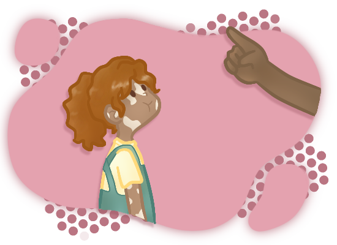
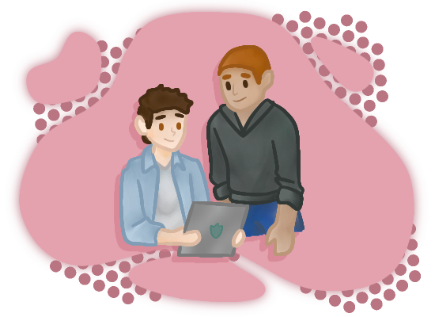
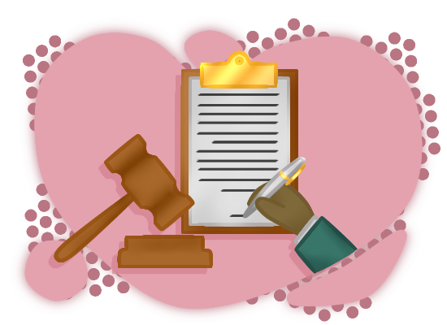

95% das crianças e adolescentes brasileiros usam a internet (Cetic.br, 2023).
A internet oferece acesso à informação, educação, entretenimento e comunicação.
Também traz riscos como cyberbullying, conteúdo impróprio, contato com estranhos e vício.
|  |
« Pais e ResponsáveisOrientar, monitorar e dialogar sobre o uso da internet. |
|---|---|
Educadores »Ensinar sobre segurança online nas escolas. |
 |
|  |
« GovernoCriar políticas públicas para proteger crianças e adolescentes online. |
Empresas »Desenvolver tecnologias seguras e ferramentas de controle parental. |
Sobre os riscos e oportunidades da internet.
Para o uso da internet, incluindo tempo de tela e conteúdo permitido.
Para monitorar atividades online e restringir acesso a sites impróprios.
Use a internet com responsabilidade e segurança.
Como mudanças de comportamento, isolamento social ou queda no desempenho escolar.
78% das crianças e adolescentes conectados usam redes sociais.
O cyberbullying afeta 10% das crianças e adolescentes brasileiros.
82% das crianças e adolescentes brasileiros acessam conteúdo impróprio online.
Ataques e humilhações online, machucando emocionalmente. Segundo UNICEF (2021),globalmente, 1 em cada 3 adolescentes é vítima de cyberbullying.
Violência, pornografia e ódio podem prejudicar o desenvolvimento. Segundo ONU (2022): Estima-se que 1 em cada 3 crianças no mundo tenha acesso a imagens de abuso sexual online.
O relatório da UNICEF(2021) destaca que a internet se tornou um terreno fértil para predadores sexuais explorarem e abusarem de crianças.
20% dos adolescentes brasileiros apresentam vício em internet, com sintomas como ansiedade e problemas de sono, revela estudo da USP em 2021.
De acordo com uma pesquisa da Safernet (2023), 67% dos adolescentes brasileiros entre 13 e 17 anos já enviaram fotos ou vídeos nus ou íntimos para alguém pela internet.
Compartilhamento de informações privadas pode levar a roubo de identidade e golpes.